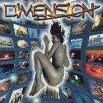

| Artist: | Dimension |
| Title: | Universal |
| Label: | Independent no catnr |
| Length(s): | 59 minutes |
| Year(s) of release: | 2002 |
| Month of review: | [05/2002] |
| 1) | Strategy | 9.09 |
| 2) | Sailor | 4.22 |
| 3) | Forbidden Game | 4.55 |
| 4) | Universal Mind | 13.25 |
| 5) | Waiting | 4.48 |
| 6) | Vanity Calls | 5.39 |
| 7) | Fearland | 5.04 |
| 8) | The Mirror Of Time | 7.35 |
| 9) | Dimensional Gate | 3.47 |
Sailor is more rocky and has more of a traditional build up than its predecessor, although complexity is never far away, and rears its not so ugly head in the guitar solo. Another track that gets its point across very well.
The bouncing of a modem negotiating connection opens Forbidden Game, which continues to have a stronger presence of electronics, although the guitars and voice remain dominant. The guitar solo once again is a bit on the plain side, but the rhythm guitar makes up for this, almost reversing the normal order.
Universal Mind is a bit of an epic. The intro is yet another bit of evidence of musical as well technical prowess, leading into a slowly pushing vocal section. This bring us onto an intermediate instrumental section led by guitar but organ as well into complexity, regularly against the grain, but sometimes simply melodic as well. This length instrumental section leads into the vocal closing.
A piano solo intro opens Waiting, along with a bass and shuffling, giving the track an intimate feel, which is enhanced by the vocals, some much more gentle than on previous tracks. The waiting is honored by a building tension, culminating in a guitar solo.
Vanity Calls starts pretty traditional, but the instrumental section belies its seeming normalcy, reeling off into mostly complex instrumental bits (and, of course pieces).
Fearland has more drawn out vocals than the previous songs, giving it something of a different feel. The complexity remains, though. The instrumental section features Spanish guitar, creating a nice break, to return to the pressing strength. Towards the end of the track complexity almost runs away with it, as so often can be found in the more technical jazzrock. Dimension manage to check it, though.
The Mirror Of Time has the now familiar combination of strength and complexity, although somewhat more melodic than previous tracks. This track contains less surprise than most others, making it less interesting.
Dimensional Gate is dominated by piano and elongated guitars, with some whispering overlayed. Quite a nice way to wind down after all that's gone before.
You can find the band at www.dimensionshome.com